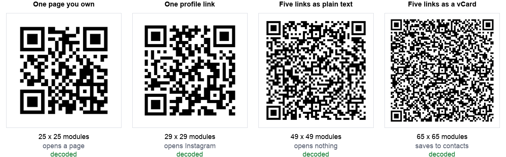

You have an Instagram, a TikTok, a YouTube channel, an X account and a Facebook page. You want one QR code on a business card or a shop window that gets people to all of them.
There are four ways to do it, they are not equally good, and the difference is measurable. So we measured it.
The short version: a link page on your own domain produced a 25 by 25 code, smaller than the 29 by 29 you get from a single Instagram profile link. Putting all five links inside the code directly produced a 49 by 49 grid that opens nothing at all.
The four options, measured

| Approach | Chars | Grid | Min print width | What happens on scan |
|---|---|---|---|---|
| A link page on your own domain | 24 | 25 x 25 | 13.2 mm | Opens your page with all five |
| One profile link | 30 | 29 x 29 | 14.8 mm | Opens that one profile |
| Five links as plain text | 142 | 49 x 49 | 22.8 mm | Nothing opens |
| Five links as a vCard | 278 | 65 x 65 | 29.2 mm | Saves to contacts with all five |
Print width is calculated at 0.4 mm per module, a common working floor for laser printing, including the four module quiet zone the specification requires. The sizing guide explains where that figure comes from.
The finding that surprised us: a page on your own domain is not just the most useful option, it is also the smallest code. https://qrotto.com/links is 24 characters. https://instagram.com/qrottohq is 30. Your own domain is usually shorter than a platform URL with your handle bolted on the end.
Why stuffing five links in does not work
This is the approach people try first, and it is the one worth ruling out clearly.
A QR code can hold five URLs as text without any trouble. Ours decoded perfectly at 49 by 49. The problem is what happens next: a QR code containing multiple lines of text is just text. There is no format in the specification for "here are five links, offer them as a menu". A phone camera that reads five lines of text will typically offer to search for it or copy it, not open five browser tabs.
So you have paid for a denser code, which needs to be printed nearly twice as wide as a single profile link, and in exchange the person scanning it gets a wall of raw URLs to squint at and type by hand. That is worse than doing nothing.
The vCard option, which almost nobody uses
There is one standard format that genuinely holds several links in a single code, and it is the humble contact card. A vCard supports repeated URL fields, so you can put all five profiles in one and the phone will offer to save them into contacts.
It works. Ours decoded at 65 by 65 with all five links intact. But look at the cost: 278 characters, the densest code in the test, needing about 29 mm of printed width to stay reliable. That is more than twice the width of the link page option.
It is also a different action. Scanning it does not take anyone to your TikTok. It offers to save a contact, and the links sit inside that contact card for later. For a networking event where you want to be in someone's phone, that is exactly right. For a shop window, it is the wrong verb entirely.
If that is the direction you want, our vCard generator builds the contact card and you can add a website to it. Keep the number of fields down, because every one of them pushes the grid up.
Your platform makes no difference
People worry about which platform to feature, as though some produce better codes. They do not. With the same eight character handle, every platform we tested landed on the same grid except one:
| Platform | Profile URL length | Grid |
|---|---|---|
| X (Twitter) | 22 | 25 x 25 |
| TikTok | 28 | 29 x 29 |
| 29 | 29 x 29 | |
| YouTube | 29 | 29 x 29 |
| 30 | 29 x 29 | |
| 30 | 29 x 29 | |
| 32 | 29 x 29 | |
| Snapchat | 33 | 29 x 29 |
Snapchat's URL is eleven characters longer than X's and produces an identical grid to Instagram's. QR codes come in fixed version steps rather than growing character by character, so a handful of extra characters usually costs nothing at all. Choose the platform your audience actually uses and stop thinking about the code.
Your handle does
The one thing that does move the needle is how long your username is:
| Handle length | Full URL | Grid |
|---|---|---|
| 4 characters | 26 | 25 x 25 |
| 8 to 20 characters | 30 to 42 | 29 x 29 |
| 24 characters and up | 46 and up | 33 x 33 |
Going from a short handle to a long one moves you up two version steps, which means noticeably smaller modules at the same printed size. It is not a reason to rename your account, but it is a reason to print a little larger if your handle is long, and a reason to prefer your own short domain if you have one.
What we would actually do
- If you own a domain, point the code at a page on it. Smallest code, you control what it lists, and you can change the destinations later without reprinting anything. This is the rare case where the best answer is also the cheapest one.
- If you do not own a domain, use one profile link, not five. Pick the platform where you actually reply to people. A code that reliably opens one profile beats a code that theoretically offers five.
- At networking events, consider the vCard instead. Being saved in someone's phone is worth more than a follow, and the links travel with the contact. Print it larger.
- Do not put multiple URLs in as text. Bigger code, nothing opens.
One thing to be honest about with option 1: a third party link page service gives you almost exactly the same code size, and we measured that too. It was 25 by 25, the same as our own domain. The difference is not the code, it is control. A link on a domain you own keeps working if the service shuts down or changes its pricing. Our guide to static and dynamic codes works through that tradeoff properly, because it is the same one.
How we tested this
- The same eight character handle across every platform, so the only variable was the URL format.
- Error correction level M throughout, the common default. Higher levels enlarge every grid here but do not change the ordering.
- Grid sizes read from the encoder rather than measured off an image, so they are exact.
- Every code decoded back and compared character by character against what went in. All of them matched, including the 65 by 65 vCard.
- Print widths calculated, not measured on a press, at 0.4 mm per module plus the quiet zone.
Two limitations worth stating. First, we did not test what each phone does with a five URL text code, because that varies by handset and operating system, and we do not have a lab of phones. What we can say from the format itself is that there is no standard telling a scanner to treat multiple lines as a link menu. Second, our print figures assume clean laser printing on paper, and our scan limits test found that focus, not size, is what usually breaks a scan in practice.
The summary
The instinct is that one code for five profiles must involve cramming five things in. The measurement says the opposite: the fewer characters you encode, the better everything gets.
Point one short link at a page you control. It produced the smallest code in the test, smaller than a single Instagram link, and it is the only option where you can change where people land without reprinting.
If you are going the one profile route, our social media QR code generator builds the correct profile URL for ten platforms from just your username, so you do not have to guess whether TikTok wants the at sign. Whatever you make, run it through our scanner once before it goes to print.